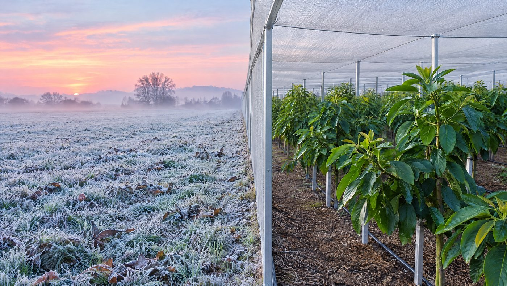
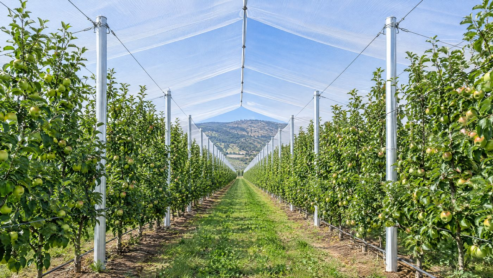
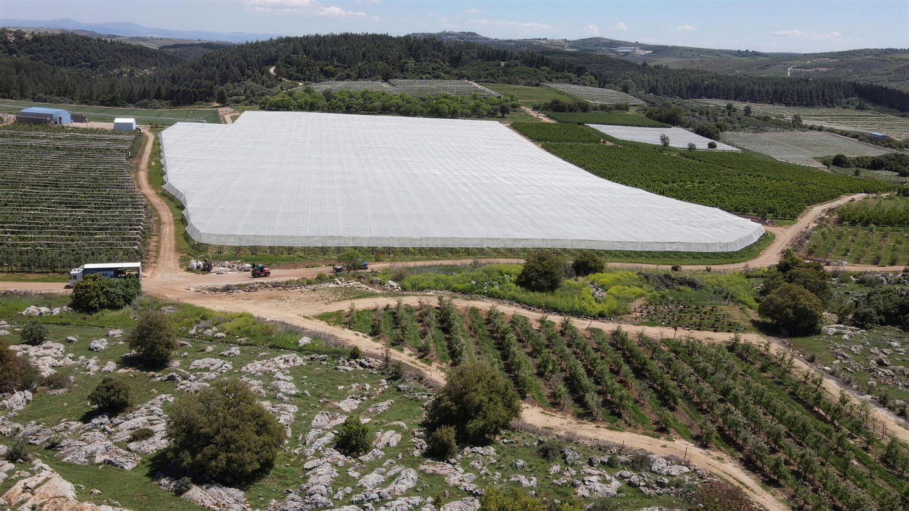
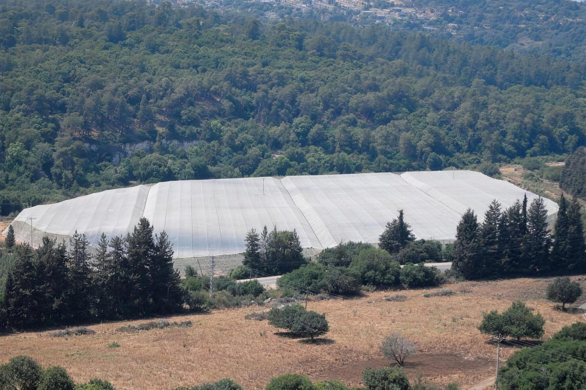

- אבוקדו הוא גידול המטעים המוביל בישראל: כ-160 אלף דונם, ועוד כעשרת אלפים דונם בכל שנה.1
- לפי שה״מ (פברואר 2025), רשתות שאחוז ההצללה בהן גבוה מ-50% הראו יעילות גבוהה בהגנה מקרה. ברשתות של 30% היעילות הייתה נמוכה יותר.5
- בית רשת קבוע מגן לאורך כל השנה: מקרה, משמש, מרוח ומברד. רשת תשליך גמישה יותר ומתאימה בעיקר למטע צעיר ולעונת הקרה.
- מבנה מעל אבוקדו חייב להיות מתוכנן לברד: בניסוי בקיבוץ נירים ברד כבד הפיל את הרשת.4
- בפורטוגל גדל שטח האבוקדו מפחות מ-300 הקטר ב-2013 לכ-2,600–2,800 הקטר ב-2023, ובחלק מהאזורים יש סיכון לקרה ולרוח.10
האבוקדו כבר מזמן אינו עוד גידול, ולכן גם ההחלטה על בית רשת לאבוקדו היא החלטה עסקית. לדברי שחר גולדברג, יו״ר שולחן האבוקדו במועצת הצמחים, יש בישראל כ-160 אלף דונם אבוקדו, וזה גידול המטעים המוביל בארץ. בכל שנה נוטעים עוד כעשרת אלפים דונם. לפי סיכום משרד החקלאות לשנת 2024, 43% מהפירות שמיוצאים מישראל הם אבוקדו.1
מטע כזה הוא השקעה של שנים, והוא חשוף למזג האוויר. ב-2025 פיצתה קנט את מגדלי האבוקדו בכ-57 מיליון ₪, לעומת כ-36 מיליון ₪ ב-2024. אירוע הקרה של פברואר 2025 פגע בלילה אחד במאות אלפי דונמים של גידולים שונים.23 מכאן השאלה שהמדריך הזה עונה עליה: מתי רשת מעל מטע אבוקדו היא החלטה עסקית נכונה, ואיזה מבנה יחזיק אותה לאורך שנים.
אם אתם בתחילת הדרך, כדאי לקרוא קודם את המדריך שלנו על סוגי רשתות ואחוז הצללה בבית רשת חקלאי. כאן נתמקד במה שייחודי לאבוקדו.
מתאים לכם אם
- יש לכם, או שאתם מתכננים, מטע אבוקדו של 50 דונם ומעלה בישראל או 30 הקטר ומעלה בחו״ל.
- המטע נמצא באזור עם היסטוריה של קרה, ברד, רוח או שרב.
- אתם מתלבטים בין בית רשת קבוע לרשת תשליך ורוצים להבין את ההבדל ההנדסי.
פחות מתאים אם
- מדובר בכמה עצים בגינה או בחלקה קטנה.
- אתם מחפשים רק מחיר לרשת, בלי תכנון של המבנה.
שש סכנות, שלושה כלים: מפת האיומים במטע אבוקדו
אבוקדו רגיש גם לקור וגם לחום. בקיבוץ נירים מתארים סופות חול וימי חמסין דווקא בתקופות הרגישות של הפריחה והחנטה, באפריל ובמאי.4 שה״מ מסביר שנזק הקרה נגרם מהקור המקפיא, ומועצם באופן משמעותי בגלל הקרינה בבוקר שאחרי ליל הקרה. עוצמת הנזק תלויה גם בזן, בגיל המטע, במצבו הפיזיולוגי ובעומס הפרי.5
יש שלושה כלים עיקריים להגנה: בית רשת קבוע, רשת תשליך שנפרסת על שורות או על עצים, והמטרה מעל הנוף. הטבלה מסכמת מה כל אחד מהם עושה מול כל איום, לפי המקורות.
| האיום | בית רשת קבוע | רשת תשליך | המטרה מעל הנוף |
|---|---|---|---|
| קרה (מתחת לאפס) | יעילות גבוהה ברשתות של יותר מ-50% הצללה, בעיקר בזכות הצללת שמש הבוקר שאחרי הקרה5 | אותו עיקרון. לפי שה״מ זו אפשרות למטע צעיר, על שורות שלמות או על עצים בודדים5 | ״יעיל מאוד״ לפי שה״מ, אבל רק במטע שמושקה במים שפירים. מפעילים ב-2 מעלות וממשיכים עד כשעתיים אחרי הזריחה5 |
| צינה (קור קיצוני מעל האפס) | לפי שה״מ, רשתות הצללה יעילות גם מפני נזקי צינה בעצי אבוקדו5 | אותו עיקרון, בתנאי שהרשת פרוסה בזמן | שה״מ מתאר את השיטה לקרה. היא נשענת על החום שמשתחרר כשהמים קופאים |
| כוויות שמש וחום | בניסוי בספרד טמפרטורת העלה ירדה ב-3 עד 5 מעלות7. בדרום אפריקה פחתו נזקי השמש והרוח8 | רק אם הרשת נשארת בקיץ. רשת חורף מקופלת בסוף העונה | לא מיועדת לכך |
| ברד | מגן, בתנאי שהמבנה תוכנן לעומס הברד (ראו פרק 4)4 | משרד החקלאות מונה ״רשת נגד ברד בהשלכה ישירה״ לאבוקדו בין נושאי הסיוע6 | לא מגינה |
| רוח | בניסוי בדרום אפריקה הרוח מתחת לרשת ״בוטלה״8. בנירים ציפו גם לפחות אידוי4 | מגינה על הנוף המכוסה, אבל אינה שובר רוח | לא מגינה |
| סופות חול ושרב בפריחה ובחנטה | בנירים ציינו אותם כסיבה מרכזית לבחון בית רשת בנגב המערבי4 | תלוי בעונה: רשת שנפרסת לחורף כבר אינה פרוסה באביב | לא מגינה |
הטבלה מחברת מקורות שונים, וכל ממצא נכון לתנאים שבהם נמדד. ניסוי באתר אחד אינו מבטיח תוצאה זהה במטע אחר. גם למענק על המטרה מעל הנוף יש תנאים: לפי תכנית משרד החקלאות היא נתמכת באבוקדו רק באזור רגיש לקרה, עם הוכחה של הקצאת מים שפירים, בהמלצת מדריך, ועד 30 דונם למגיש בקשה.6

מה שה״מ אומר על אחוז ההצללה וההגנה מקרה
בפברואר 2025 פרסם שירות ההדרכה והמקצוע של משרד החקלאות דפון על התגוננות מפני קרה במטעים סובטרופיים. זה הממצא המרכזי לגבי רשתות, בלשון המקור:
„יעילות גבוהה בהגנה מנזקי קרה נצפתה במגוון רשתות שאחוזי ההצללה בהן גדולים מ-50%. יעילות הגנה נמוכה יותר נבעה כתוצאה משימוש ברשתות באחוז הצללה של 30%.”5
| אחוז הצללה | מה שה״מ מצא לגבי הגנה מקרה |
|---|---|
| מעל 50% | יעילות גבוהה, במגוון רשתות |
| 30% | יעילות הגנה נמוכה יותר |
שה״מ אינו מפרסם אחוזי הגנה, ולכן גם אנחנו לא. חשוב להבין את המנגנון. לפי הדפון, האפקט החיובי של הרשת נובע בעיקר מהצללה מפני קרינת השמש בבוקר שאחרי קרה קרינתית, ולאו דווקא מהעלאת הטמפרטורה של העלה או של סביבת העץ.5 כלומר, הרשת לא ״מחממת״ את המטע. היא מונעת מהשמש לפגוע ברקמה שקפאה בלילה.
מכאן נגזרות שלוש החלטות מעשיות:
- אחוז ההצללה הוא החלטה הנדסית ואגרונומית. רשת שנבחרה בשביל הקיץ לא בהכרח מגינה בחורף.
- תזמון. לפי שה״מ פורסים את הרשת בתחילת החורף ומקפלים בסופו, או פורסים נקודתית סביב אירוע קרה: לפניו, במהלכו ואחריו.5
- מיקום. קרה קרינתית שכיחה בעיקר בשטחים מישוריים וקעורים, שאליהם זורם האוויר הקר ונאגר.5 מיפוי של כיסי הקור בחלקה קובע איפה ההגנה דחופה יותר.
הדפון מבוסס בין השאר על ניסויים בישראל בעצי ׳האס׳ ו׳ריד׳ צעירים ובעצי ׳פינקרטון׳ בוגרים. בין התמונות שבו: מטע צעיר במעיין ברוך שכוסה בבית רשת להגנה מפני קרה.5
ובקיץ: מה רשת הצללה עושה לעלה
ניסוי בספרד בדק עצי ׳האס׳ צעירים בבית רשת בגובה 6 מטרים, עם רשת לבנה שמעבירה כ-76% מהאור. הממצא החשוב: הרשת קיררה את העלה, לא את האוויר.7
| מדד, בקיץ ובצהריים | בשטח פתוח | תחת הרשת |
|---|---|---|
| קרינה (PPFD מרבית, µmol/m²/s) | כ-2,000 | כ-1,400 (כ-30% פחות) |
| טמפרטורת העלה | מעל 40°C | רק לעתים רחוקות מעל 37°C (3 עד 5 מעלות פחות) |
| גירעון לחות בעלה (VPD, kPa) | 5.5–6.0 | 4.0–4.5 |
| טמפרטורת האוויר | כ-35°C | ללא ירידה עקבית |
הנתונים מניסוי בודד: אליקנטה, ספרד, קיץ 2022.7 המשמעות למתכנן: רשת יכולה להפחית עקה וכוויות שמש בעלה, אבל לא תהפוך יום שרב ליום נוח.
בית רשת קבוע או רשת תשליך
שה״מ מציין את שתי הדרכים: בית רשת קבוע, או פריסת ״תשליך״ על שורות שלמות או על עצים בודדים כשהמטע צעיר.5 הבחירה תלויה באיומים שבאמת קיימים בחלקה, בגיל העצים ובאופן שבו המטע מנוהל.
| קריטריון | בית רשת קבוע | רשת תשליך |
|---|---|---|
| מתאים ל | מטע בכל גיל, הגנה מכמה איומים | בעיקר מטע צעיר ועונת הקרה5 |
| עונתיות | כל השנה | פריסה בתחילת החורף וקיפול בסופו, או סביב אירוע5 |
| ברד | הגנה, בתנאי שהמבנה תוכנן לעומס | רשת נגד ברד בהשלכה ישירה נמנית בתכנית המשרד כנושא סיוע לאבוקדו6 |
| רוח, חול ושרב באביב | כן, כשהמבנה סגור ומתוכנן לכך | חלקית, ותלוי מתי הרשת פרוסה |
| עבודה שוטפת | תחזוקת מבנה, מתיחת כבלים, בדיקת הרשת | פריסה וקיפול חוזרים, במגע ישיר עם הנוף |
| מענק (תכנית 2023) | בתי רשת במטעים נתמכים לתפוחים, ליצ׳י, תאנים וקיווי. אבוקדו אינו ברשימה6 | ״רשת נגד ברד בהשלכה ישירה״ לאבוקדו נמנית בנושאי הסיוע. בטבלת המבנים למטעים מופיעה לרשת תשליך עלות מוכרת של 1,300 ₪ לדונם, אבל הגידולים שמפורטים בשורה הם הדרים, תפוח, נשירים ודובדבן, לא אבוקדו. כדאי לברר מול המנהלה6 |
כלל אצבע: כשהאיום המרכזי הוא קרה, במטע צעיר ובכיס קור מוגדר, רשת תשליך עשויה להספיק. כשיש כמה איומים יחד, למשל קרה בחורף, ברד, ורוח וחמסין בפריחה, בית רשת קבוע נותן תשובה אחת לכולם. את פרטי רשת נגד ברד ושל מנגנוני קיפול עונתיים פירטנו במדריך נפרד.
בשני המקרים התזמון קריטי: הרשת צריכה להיות פרוסה לפני ליל הקרה הראשון. התקנה בחורף דורשת צוות שיודע לעבוד גם בגשם.
„הפגינו מקצועיות, יצירתיות וגמישות, ועמידה בלוחות זמנים גם כאשר החורפים היו גשומים במיוחד.”

הלקח מנירים: למה מבנה לאבוקדו חייב להיות מתוכנן לברד
קיבוץ נירים שבנגב המערבי נטע ב-2007 חלקת ניסוי של 5 דונם בצפיפות נטיעה גבוהה פי שלושה מהמקובל, תחת בית רשת. באתר הקיבוץ מתועד המשפט: ״ברד כבד הפיל את הרשת״.4 האתר אינו מפרט את סוג המבנה, את סוג הרשת או את עוצמת האירוע, ולכן אי אפשר להסיק ממנו דבר על מבנה מסוים. אבל הלקח העקרוני ברור, והוא נכון לכל מטע אבוקדו שמכוסה ברשת.
ברד הוא עומס, לא רק פגיעה
אבן ברד שנשארת על הרשת הופכת למשקל. היא מתגלגלת אל הנקודה הנמוכה, הרשת שוקעת שם עוד, ושם מצטבר עוד ברד. לכן השאלה ההנדסית אינה רק ״האם הרשת תעצור את האבן״, אלא ״לאן הברד הולך אחרי שנעצר״. גיאומטריית הגג, המרווח בין כבלי הגג והמקומות שבהם הברד יכול לרדת מהרשת קובעים כמה ברד יישאר למעלה.
מסלול העומס
כל קילוגרם שיושב על הרשת עובר בשרשרת: מהרשת לכבלי הגג, מהכבלים לעמודים, מהעמודים לכבלי העיגון בהיקף, ומשם לעוגנים בקרקע. השרשרת חזקה כמו החוליה החלשה שבה. לכן מתכננים את כולה לעומס המשולב של ברד ורוח, ולא כל רכיב בנפרד.
הקצוות נושאים את השיא
מדידה של מכון וולקני בבית רשת מעל מטע אפרסקים מצאה שהכוח שהרוח מפעילה על הרשת גדל כפולינום מסדר שני של מהירות הרוח. כלומר, הכפלת מהירות הרוח מגדילה את הכוח הרבה יותר מפי שניים. הכוחות היו חזקים ביותר בנקודות שבהן הרשת מחוברת לכבל בקצה החיצוני של בית הרשת. לפי האקסטרפולציה של החוקרים, ברוח של 150 קמ״ש הכוח בנקודת חיבור אחת עשוי להגיע ל-50 ק״ג.9 זו הסיבה שעיגון, מתיחת כבלים ופרטי הקצה מתוכננים בנפרד, ולא ״כמו בשאר המבנה״.
סוג הרשת
רשת שנבחרה להגנה מקרה, עם יותר מ-50% הצללה, אינה בהכרח מתאימה גם לברד. כשאותה רשת אמורה לתת מענה לשני האיומים, בודקים בתכנון גם איך היא מתנהגת תחת ברד, מים ורוח, ולא רק את אחוז ההצללה שלה.

מבנה טוב מצמצם תקלות אחרי סערה, אבל לא מבטל אותן. ההבדל הוא מי מגיע לשטח.
„גם בימי גשם ורוח עזה הצוות מגיע ונותן פתרון מיידי.”
יש לכם מטע אבוקדו בכיס קור, באזור ברד או במקום חשוף לרוח? ספרו לנו גידול, אזור ושטח, ונחזור אליכם עם כיוון תכנוני ראשון. מתכננים מטע מחוץ לישראל? קראו על הקמת מטע אבוקדו בחו״ל בשיטת Turnkey.
איך מתכננים בית רשת לאבוקדו, שלב אחר שלב
- מיפוי הסיכון בחלקהכיסי קור, היסטוריה של ברד ורוח, חשיפה לשרב בפריחה, וזן וגיל העצים. מכאן נגזר מה צריך להגן ומתי.
- בחירת הפתרוןבית רשת קבוע או רשת תשליך, אחוז הצללה וסוג רשת, יחד עם האגרונום של המטע.
- תכנון הנדסיעומסי רוח וברד, מסלול העומס עד לעוגנים, פרטי קצה, וגובה שמתאים לכלי גובה לאבוקדו.
- ייצור ובדיקה במפעלעמודים, רשתות, כבלים ואביזרים מיוצרים ונבדקים במפעל שלנו לפני שהם יוצאים לשטח.
- התקנה בשטחבצוותים מבוטחים ומוסמכים לעבודה בגובה, בלוח זמנים שמתוכנן מול עונת הקרה.
- מסירה ותחזוקה לאורך שניםבדיקת מתיחות, רשת ועיגון, וטיפול אחרי אירועי מזג אוויר.

מים וגודל פרי: מה ציפו בנירים לקבל מבית רשת
ברקע התאורטי לניסוי בנירים מפרט הקיבוץ את הסיבות לכסות את המטע: מניעת נזקי טבע כמו ברד וסופות חול, פחות רוח ולכן פחות אידוי, טמפרטורות קיץ נמוכות יותר, ובעיקר הגדלת הפרי. לפי הקיבוץ, בזן ׳האס׳ המיועד ליצוא קשה בישראל להגיע לגודל הפרי האופטימלי לשווקים בחו״ל.4 זה הרציונל שהקיבוץ עצמו הציג, לא תוצאה מחקרית מוכחת.
כדאי לקרוא אותו לצד ממצא זהיר מדרום אפריקה: בשני אתרי ניסוי תחת רשת הצללה פחתו נזקי השמש והרוח והשתפרה איכות הפרי לשיווק, אבל היבול בשנת 2015 היה נמוך יותר בשני האתרים. החוקרים הצביעו על השקיה ועל האבקה.8 גם בנירים ציינו שאלות פתוחות, כמו התנהגות הדבורים וההשפעה על הפריחה.4 המסקנה: רשת היא כלי, והתוצאה תלויה בניהול האגרונומי שמתחתיה.
אבוקדו בחו״ל: מה שונה בפורטוגל ובחצי האי האיברי
לפי פרופיל המדינה ש-CIRAD הכין עבור Hass Avocado Board, עד 2013 היו רשומים פחות מ-300 הקטר, כולם באלגרב. בתחילת 2023 נאמד השטח ב-2,600 עד 2,800 הקטר, ויותר משלושה רבעים ממנו באלגרב.10
אבוקדו בפורטוגל: מנישה לענף
שטח מטעי האבוקדו בפורטוגל, בהקטרים
הנתונים בטבלה
| ערך | |
|---|---|
| עד 2013 | 300 |
| תחילת 2023 | 2700 |
אותו דוח מצביע על הסיכונים שמוכרים למגדל הישראלי. באלגרב יש יתרונות אקלימיים לזן ׳האס׳, אבל גם סיכון לקרה. אזור אלנטז׳ו ליטורל, צפונה יותר, מתואר כחשוף יותר לקרה ולגלי חום מזדמנים, וגם סוער יותר. היקף מערכות ההגנה מקרה משתנה: המטעים הגדולים באלנטז׳ו מצוידים במלואם, ורק חלק ממגדלי אלגרב השקיעו בהן. לפי אנשי מקצוע שהדוח מצטט, צריכת המים היא כ-5,500 עד 6,500 מ״ק להקטר, והלחץ על משאבי המים באזור עולה.10 היצוא עדיין נמוך מ-10,000 טון, ומחברי הדוח צופים פוטנציאל יצוא של כ-40,000 טון עד 2030. הם גם מציינים האטה בקצב הנטיעות בשנים האחרונות.10
הצד של השוק ברור לא פחות. לפי CBI, הסוכנות ההולנדית לקידום יבוא מארצות מתפתחות, אירופה ייבאה ב-2023 וב-2024 הרבה יותר אבוקדו, עם צמיחה שנתית מוערכת של 16% בנפח. ערך היבוא מישראל הוכפל בחמש השנים שעד 2024. במקביל, לפי CBI, התחרות ממרוקו ומספרד הולכת וגוברת.11
מי מספק אבוקדו לאירופה: ערך היבוא ב-2024
ערך יבוא האבוקדו לאירופה מארבע ספקיות מרכזיות, במיליוני אירו
הנתונים בטבלה
| ערך | |
|---|---|
| פרו | 1300 |
| ישראל | 400 |
| קולומביה | 396 |
| דרום אפריקה | 300 |
למשקיע, השוק האירופי קרוב ומבוקש, אבל מטע באיבריה מתמודד עם איומים שאנחנו מכירים מהבית: קרה, רוח, חום ומים. את מבנה ההגנה מחליטים כבר בתכנון החווה, לא אחרי החורף הראשון.
בית רשת לאבוקדו בפורטוגל. העקרונות ההנדסיים זהים לאלה של בית רשת בגליל: תכנון לעומסי רוח וברד, עיגון שמתאים לקרקע, ורכיבים שנבדקים לפני ההתקנה. מה שמשתנה בין מדינות הוא הקרקע, האקלים המקומי והרגולציה. ההיתרים באחריות היזם, וכדאי להתחיל בהם מוקדם. הלקוח שלנו בפורטוגל מוכן לספר על העבודה המשותפת.
לפני שחותמים: רשימת בדיקה למבנה מעל אבוקדו
- האם אחוז ההצללה נבחר לפי המטרה העיקרית: קרה, שמש או שתיהן?
- האם מופו כיסי הקור בחלקה, ונקבע איפה ההגנה דחופה יותר?
- האם התכנון מחשב עומס ברד, ולא רק עומס רוח?
- לאן הברד הולך אחרי שהרשת עוצרת אותו?
- האם פרטי הקצה, כבלי ההיקף והעוגנים מתוכננים לעומס השיא?
- האם הרכיבים נבדקים במפעל לפני היציאה לשטח?
- האם הצוות מבוטח ומוסמך לעבודה בגובה?
- מי אחראי על פריסה, קיפול ותחזוקה אחרי המסירה?
- האם בדקתם מול תכנית המענקים העדכנית מה נתמך באבוקדו?
אנחנו לא מקימים פרויקטים מתחת ל-50 דונם בישראל או 30 הקטר בחו״ל, כדי לתת לכל פרויקט את מלוא תשומת הלב. אנחנו לא מטפלים ברישוי ובהיתרים: ההיתר באחריות היזם, ונגיד לכם את זה כבר בשיחה הראשונה. אנחנו גם לא נותנים מחיר בטלפון לפני שהבנו את הקרקע, הגידול והמטרה. ועוד דבר אחד: רשת אינה תחליף לאגרונומיה. השקיה, האבקה וניהול העצים מתחת לרשת קובעים את התוצאה לא פחות מהמבנה.
רוצים לשמוע ישירות מלקוחות? נשמח לחבר אתכם ללקוחות שלנו בברעם, אלרום, יחיעם, מצובה וחניתה, וללקוח שלנו בפורטוגל.
מגדלים בישראל או משקיעים בחו״ל: שתי דרכים להתחיל
מגדלים בישראל, 50 דונם ומעלה
- יש לכם מטע קיים או נטיעה מתוכננת באזור קרה, ברד או רוח.
- אתם רוצים מבנה שיחזיק שנים, לא רק עונה.
- הצעד הבא: שיחת תכנון עם יפתח, עם גידול, אזור ושטח.
משקיעים בחו״ל, 30 הקטר ומעלה
- אתם בוחנים מטע אבוקדו בפורטוגל, באירופה או באפריקה.
- אתם מחפשים שותף אחד לקרקע, למבנים, לנטיעה ולניהול הגידול.
- הצעד הבא: איך עובד פרויקט Turnkey בחו״ל.
שאלות נפוצות
האם רשת מגינה על אבוקדו מקרה?
כן. לפי שה״מ, רשת הצללה היא אחד הפתרונות היעילים בהגנה מפני נזקי קור קיצוני, וניסויים הראו יעילות גם מפני צינה בעצי אבוקדו. האפקט נובע בעיקר מהצללת קרינת השמש בבוקר שאחרי הקרה, לא מחימום העץ. זו אינה ערובה: עוצמת הנזק תלויה גם בעוצמת הקרה, בזן, בגיל המטע ובמצבו.5
איזה אחוז הצללה מתאים לאבוקדו?
להגנה מקרה, שה״מ מצא יעילות גבוהה ברשתות שאחוז ההצללה בהן גבוה מ-50%, ויעילות נמוכה יותר ברשתות של 30%.5 להגנה בקיץ נבדקו בניסויים רשתות קלות יותר, למשל בספרד רשת שמעבירה כ-76% מהאור.7 הבחירה תלויה במטרה, באזור ובזן, ונעשית יחד עם האגרונום.
בית רשת או רשת תשליך למטע אבוקדו צעיר?
אם האיום המרכזי הוא קרה, והמטע צעיר, רשת תשליך על שורות או על עצים בודדים היא אפשרות ששה״מ מציין במפורש.5 כשיש גם ברד, רוח או שרב בפריחה, בית רשת קבוע נותן מענה לכל האיומים לאורך השנה. ההחלטה מתחילה במיפוי הסיכונים בחלקה.
האם בית רשת לאבוקדו עומד בברד כבד?
רק אם תוכנן לכך. בניסוי בקיבוץ נירים ברד כבד הפיל את הרשת.4 מבנה שעומד בברד מתוכנן לפי מסלול העומס המלא, מהרשת דרך הכבלים והעמודים ועד העוגנים. הוא גם לוקח בחשבון לאן הברד הולך אחרי שנעצר, ומחזק את הקצוות, שבהם מתרכזים הכוחות.9
האם יש מענק לרשת נגד ברד באבוקדו?
בתכנית הפיתוח של משרד החקלאות לשנת 2023, ״רשת נגד ברד בהשלכה ישירה״ לאבוקדו נמנית בין נושאי הסיוע במטעים. בטבלת המבנים למטעים מופיעה לרשת תשליך עלות מוכרת של 1,300 ₪ לדונם, אבל אבוקדו אינו בין הגידולים שמפורטים בשורה הזו, ולכן כדאי לברר מול המנהלה איך מחושב המענק. זהו נתון לחישוב מענק, לא הצעת מחיר. בתי רשת קבועים במטעים נתמכו בתכנית זו לתפוחים, ליצ׳י, תאנים וקיווי בלבד.6 כדאי לבדוק את התכנית העדכנית. המחיר בפועל נקבע אחרי ביקור בשטח, כי הוא תלוי בקרקע, בחשיפה לרוח, בגובה ובהיקף.
אפשר להקים בית רשת לאבוקדו בפורטוגל?
כן. הקמנו בית רשת לאבוקדו בפורטוגל. באלגרב ובאלנטז׳ו יש סיכון לקרה, ובאלנטז׳ו ליטורל גם רוח חזקה יותר וגלי חום מזדמנים.10 ההיתרים באחריות היזם. למשקיעים שמתכננים חווה שלמה, ראו את המדריך על חווה חקלאית בחו״ל בשיטת Turnkey.
מטע אבוקדו של 50 דונם בישראל או 30 הקטר בחו״ל?
ספרו לנו מה מגדלים, איפה ובאיזה היקף, ויפתח יחזור אליכם עם כיוון תכנוני ראשון. בלי התחייבות, ובלי הצעת מחיר לפני שראינו את השטח.
מעדיפים לדבר עכשיו? טלפון המשרד: 04-9854404
מקורות
- המהפכה הירוקה (ארי ליבסקר; ראיון עם שחר גולדברג, יו״ר שולחן האבוקדו במועצת הצמחים), כלכליסט, 25.12.2025
- סיכום נזקי מזג האוויר לחקלאות ב-2025 לפי נתוני קנט (משה כהן), מעריב, 14.01.2026
- סיכום נזקי מזג האוויר לחקלאות ב-2024 לפי נתוני קנט (משה כהן), מעריב, 16.01.2025
- מטע אבוקדו בקיבוץ נירים, כולל ״פרויקט אבוקדו צפוף: בית רשת, רקע תאורטי״, אתר קיבוץ נירים (נבדק באוקטובר 2026)
- התגוננות מפני קרה במטעים סובטרופיים, שה״מ, משרד החקלאות וביטחון המזון, פברואר 2025
- תכנית הפיתוח עפ״י נושאים 2023, מנהלת ההשקעות בחקלאות, משרד החקלאות, 2023
- Tasa, M. et al., Shade Nets Improve Gas Exchange and Chlorophyll Fluorescence in Young Avocado Trees Grown Under Mediterranean Conditions, Plants 14(23):3550, MDPI, 2025
- Blakey, R.J. et al., shade netting trials on avocado (Mooketsi, Karkloof), South African Avocado Growers' Association Yearbook 38, 2015
- Ibanez, P., Teitel, M., Tanny, J., Effect of wind speed and direction on forces acting on shade nets covering orchard trees, Acta Horticulturae 1227, ISHS, 2018
- Imbert, E. et al. (CIRAD), World avocado production prospects: Portugal, Hass Avocado Board Country Profile, פברואר 2023
- Entering the European market for avocados, CBI, המרכז לקידום יבוא מארצות מתפתחות (הולנד), עודכן 30.12.2025